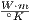
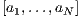
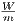
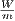
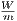
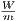

ABSTRACT
This paper examines the design optimization of a repeating two-dimensional heat exchanger section. Focus is particularly directed upon a heat exchanger section with a variable top surface shape, and straight bottom, left, and right sides. The heat exchanger’s top surface is parametrized by a mathematical model, subject to section continuity and vertical thickness constraints. Its geometry is discretized into a mesh from which the heat flux per unit length is computed through finite-volume methods. Different optimization algorithms and mesh resolutions are examined in regard to their performance in maximizing the heat exchanger’s flux per unit length. It is shown that through the optimization of different mathematical characterizations of the heat exchanger’s top surface that, in fact, a heat flux per unit length greater than 35% of the nominal value from a flat top surface is possible, while abiding to thickness constraints.
1.
In the context of a two dimensional heat exchanger without heat generation, convention leads to the use of the partial differential equation in Cartesian coordinates:
|
| (1) |
Through Fourier’s law, the heat flux associated with the heat exchanger’s temperature profile, T(x,y), and thermal conductivity, k, becomes:
|
| (2) |
However, when examining a heat exchanger optimization problem with a rather irregular geometrical structure, it is significantly more convenient to use methods which allow for unstructured meshes. One of such methods is the finite volume method, which essentially allows one to represent and evaluate partial differential equations, such as Equation 1, in the form of algebraic equations.
1.1.
Through the finite volume method, values must be calculated at discrete places, otherwise known as nodes, within a meshed geometry [?]. Sub-dividing the heat exchanger’s spatial domain into finite volumes (i.e. cells), for a particular cell, i, the volume integral can be taken over the total volume of the cell, vi. This results in the problem’s partial differential equation transforming as follows:
|
| (3) |
where u represents a vector of states, f represents the flux tensor, si represents the total surface area of the cell, and n represents the unit vector normal to the surface of the cell pointing outward.
1.2.
In the case of generally unstructured grid meshes, it is no longer feasible to compute the gradient of a scalar at a given volume centroid using the definition of derivatives. Rather, it is convenient to implement the conventional Green-Gauss theorem [?]. This theorem states that the surface integral of a scalar function is equal to the volume integral of the gradient of the scalar function; in mathematical representation:
|
| (4) |
where n is the surface normal pointing out from the volume, ϕ is a scalar, S is the surface, and V is the volume. After assuming the gradient of the scalar, ∇ϕ, is constant over the control volume and that the integral over the surface can be represented as a summation of the average scalar value in each face multiplied by the face’s surface vector, the theorem can be reformulated as follows:
|
| (5) |
Using this methodology, the horizontal derivatives are used to correct the fluxes along the heat exchanger’s faces, that have both horizontal and vertical components to the face normal. After applying Dirichlet boundary conditions to both the top and bottom surfaces of the heat exchanger’s geometry and applying the Green-Gauss discretization to the geometry’s mesh, the heat flux per unit length can be computed.
2.
2.1.
In the effort to optimize the shape of the heat exchanger’s top surface, it is fitting to apply some sort of mathematical model. Given that this particular problem requires that the shape’s boundary conditions on both the left and right sides be periodic to allow continual section addition, it is convenient to select a mathematical model that is innately periodic, namely a sin series. The general form of a sin series representing the heat exchanger’s vertical thickness as a function of horizontal distance, h(x), can be shown as follows:
| | (6) |
where [a1,…,an]T represents the coefficient vector, N represents the number of coefficients, and Lx is the horizontal width of the heat exchanger as a whole. In the programming language of MATLAB, this formulation culminates in the form of the class instance function shown in function ts = Surface(obj, a) of Listing 4, that generates a discretized mesh of the heat exchanger’s top surface in accordance to variable size vector of coefficients.
2.2.
As required by the given problem, the heat exchanger is asserted to have several constant preexisting properties, namely: a horizontal width, Lx, of 5 cm, a thermal conductivity, κ, of 20 , and a minimum and maximum vertical thickness, h(x), of 1 cm and 5 cm respectively. Beyond intrinsic parameters, the environment is modelled to assert a bottom and top temperature of T1 = 90∘K and T2 = 20∘K respectively. This environmental model closely represents the application of a radiator, in which it is desired to transfer heat from hot water, designated by T1, to air, designated by T2.
3.
3.1.
Essentially, the goal of this study is to maximize the heat exchanger’s flux per unit length through alteration of its top surface shape, while abiding to constraints. In the conventional generalization of optimization problems, one has an objective function to be minimized, subject to inequality constraints, equality constraints, and domain bound constraints. In the case of the heat exchanger, this problem boils down to the following formulation:
|
| (7) |
where Flux(a) represents the flux per unit length as a function top surface geometry determined by the coefficient vector, a = T, and the thickness at any point along the top surface, h(a,x) is within constraints. The MATLAB implementation of this formulation is shown in the objective function, function f = Neg_Flux(obj, a), and the constraint function, function [c, ceq] = Thickness_Limit(obj, a) of Listing 4.
3.2.
In this paper MATLAB’s fmincon is used to assess the effectiveness of different optimization algorithms, namely: interior point method, active set method, and sequential quadratic programming. The interior point method is capable handling large, sparse problems, as well as small dense problems, and is able to satisfy bounds at each iteration [?]. Sequential Quadratic Programming is an iterative method for nonlinear optimization, which is typically used on problems in which the objective function and the constraints are twice continuously differentiable [?]. The active set method, in general, is faster than the two aforementioned algorithms; however it takes large steps, as it is suited for large scale problem, which may lead inaccurate minima determination [?], and thus will herein escape the scope of this paper. In use, the user’s discretion determines the algorithm used by passing its string designation to the function, function [aopt, fval] = Optimize(obj, a0, alg) of Listing 4.
4.
In the effort to enable the modular implementation of the methods
and formulation described in previous sections, a Heat Exchanger
class is constructed in MATLAB, as shown in Listing 4, allowing
one to instantiate an object of the heat exchanger class as such:
4.1.
Once the heat exchanger object has been instantiated, one can test
the dynamic scaling of the top surface mesh generation function,
function ts = Surface(obj, a), by executing the following:
from which, with some additional annotation, the plot in Figure 1 is generated. The user can specify a coefficient vector of an arbitrary length, N, and the top surface mesh function’s sin formulation will accommodate it.
With the instantiated heat exchanger object, the user can begin the optimization process by asserting an initial guess, a0. Then after, the initial guess is fed through the heat exchanger’s class instance optimization method as follows, [aopt, fval] = HE.Optimise(a0, alg), where alg is a string in the list: ['interior-point', 'sqp', 'active-set']. Finally, the user can visualize the resulting geometry simply by running HE.Visualise(aopt).
5.
After instantiating an object of the heat exchanger class, as shown in Listing 1, it is rather easy to begin the process of optimization by asserting an initial guess of the optimal coefficient vector.
5.1.
It was found, through trial and error, that the chance of convergence among all algorithms was maximized with an initial coefficient vector guess such that the sin series oscillates about a thickness of 3 cm. Such as it is, the first term in all initial guesses of the coefficient vector shall herein be asserted as a1 = 0.03 m.
5.2.
Through practice it was found that through both mesh resolution
and coefficient vector length alteration, that the interior-point
optimizer (IPOPT) algorithm is rather finicky at lower mesh
resolutions, but it was indeed shown that convergence to a
performance of over 35% greater than the nominal flat plate flux
value was aided by resolution increases. For example, a
coefficient vector guess of length six and vertical and horizontal
resolutions of 200 nodes was optimized and visualized as follows:
leading to an optimal coefficient vector of aopt = [0.0300; -0.0025; 0.0044; 0.0032; 0.0146; -0.0049], with a flux per unit length of 9876.19 . This particular case is shown in Figure 4. The geometries resulting from an initial coefficient vector guess of length six, as show in in Figures 2 and 3, offered even higher gains in performance, garnering a flux per unit length of 10442.4008  and 10518.4232  respectively. These results are summarized in Table 1. It can be seen that accuracy is indeed confirmed through mesh refinement.
The method of sequential quadratic programming, otherwise known as SQP, is undoubtedly very powerful. However, in the case of the heat exchanger’s top surface shape optimization, it proved to be exceedingly painstaking and slow. For nearly all of the cases that the interior point optimizer faced with acceptable results, the SQP solver tended to get stuck in local infeasible minima, while its step size became increasingly smaller until termination. However, one strike of feasibility and incredible results came with six coefficients and 200 vertical and horizontal nodes, generating an incredible heat flux per unit length of 12682.4002 , with a coefficient vector of aopt = [0.0300; -0.0019; -0.0015; 0.0008; -0.0190; 0.0001]. This is an 81% improvement over the nominal heat flux value of a flat heat exchanger with equivalent dimesions. The resulting geometry can be seen in Figure 5.
It has been shown that improvements of over 35% of the nominal value of heat flux from a flat heat exchanger can be made. The scalability of the sin series, used to model the heat exchanger’s top surface was quite conducive in enabling the testing various amounts of coefficients. It has been shown that, in regards to a sin series formulation, a greater amount of coefficients tends to garner a higher value of heat flux per unit length, in this two dimensional case. Furthermore, it has been shown that increasing the resolution of the optimization process leads to a marginal gain in heat flux performance, that rather serves as an indication of accuracy, as shown in the transition between 100 to 200 nodes for the six coefficient IPOPT model. It can be seen that, although it is indicated that increasing the size of the input parameters leads to a gain in heat flux performance, it was also quite obvious that there was a loss in computational performance. With increasing resolution of the optimization, one is limited by their computer’s free random access memory, and with increasing coefficient vector size, one is limited by time, as the computations become evermore prolonged. 7.
| Heat Flux Per Unit Length (W/m) | Coefficient Vector | |
| 100 Nodes, 5 Coefficients | N/A | N/A |
| 100 Nodes, 6 Coefficients | 10442.4008 | [0.0300; -0.0025; 0.0044; 0.0032; 0.0145; -0.0048] |
| 200 Nodes, 5 Coefficients | 9876.19 | [0.0300; -0.0021; 0.0024; -0.0187; -0.0025] |
| 200 Nodes, 6 Coefficients | 10518.4232 | [0.0300; -0.0025; 0.0044; 0.0032; 0.0146; -0.0049] |